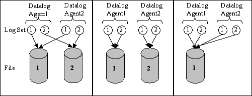

Note: Multiple log sets are no longer required as Adroit provides the DBLog agent that should make SQL logging via the Datalog agent redundant. Also you no longer need multiple proprietary sets with increasing periods and larger time deadbands, since Adroit provides a new datalog backup feature with full trend-retrieval support.
Instead of specifying only a single rate and period per datalog agent
configuration, you can create multiple log sets within a
single datalog agent.
In other words, if you need to log a given tag (agent.slot)
at different sample/window settings, you can simply create multiple log sets with these different permutations for the SAME tag, without creating separate datalog agents for each permutation. Click for the advantages of using log sets:
The advantage of using multiple log sets is this case is that it
prevents cumbersome configuration
reduces the number of required datalog agents
and subsequently decreases the memory requirements
and thereby improves performance.
For example, a user may wish to log a tag at 1 second for 2 days, and
at 10 seconds for 7 days, and at 60 seconds for 30 days and at 1 hour
for 365 days. Each of these interval/period specifications constitutes
a log set.

In the above diagram, two log sets are used for each of the two logged
tags. The first log set may be at 1 second for 2 days and the other, 10
seconds for 7 days. It is possible to configure these sets in various
combinations.
For instance, all the slower logging rates for all tags may be logged
to one file while the faster logging rate for all tags logged to another
separate file.
Alternately, the file for each tag (or set of tags) may
be distinct from another tag (or another set of tags) even though each
tag may have multiple sets of logging. Thirdly, it is also possible to
place all logging into one central file.
The data for each datalog agent can be extracted and saved to a CSV
file for analysis. When multiple log sets are used, the data for each
log set can be extracted and saved to a separate CSV file.
Data log clients (for example, trends and OLE method calls) will always
retrieve data from a matching sample rate set. If there is no matching
sample rate set, data will be retrieved from the best matching set. The
matching criteria will take the requested rate and period into account.
Therefore, trend windows configured at trend rates
that match the data log rate will ensure that the data from an actual
set is always displayed as long as the required period is within that
set.

 Click for the advantages of using log sets:
Click for the advantages of using log sets: